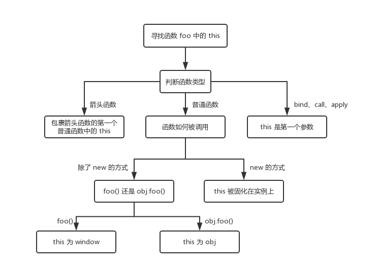

大家好！许久不见甚是想念，仅仅过了两天不到，我又开始给你们写技(cai)术(ji)文章了。
上回说到，这this的指向，以及作用域的问题，其实我后来发现这个两个说的好像都差不多，但是呢，过于懒得我就不想改了。
所以今天，我就立马给大家介绍this的绑定规则！！！是不是好高兴，好激动，甚至有点想打赏我了。好的，我自恋了，下面直接开始。
调用位置
虽然我上篇文章粗略的说过，理解this的绑定，需要知道函数的调用位置，才能确认this绑定的对象。
下面是《你不知道的JavaScript上》中的一个例子：
function baz() {
//当前调用栈是：baz
//因此，当前调用位置是全局作用域
console.log('baz');
bar(); //<-- bar的调用位置
}
function bar() {
//当前调用栈是：baz -> bar
//因此，当前调用位置是在baz中
console.log('bar');
foo(); //<-- foo的调用位置
}
function foo() {
//当前调用栈是：baz -> bar -> foo
//因此，当前调用位置是在bar中
console.log('foo');
}
baz()； // <-- baz的调用位置学习JS的同学，多少听过栈跟堆，当然这不是本文的重点，但是为了照顾同学，我决定以后出一篇（有机会的话，嘿嘿）。
绑定规则
接下来我们就会看看在函数的执行过程中调用位置如何决定this的绑定对象。
主要分为了四个规则，下面会逐一分析。
默认绑定
首先要介绍的是最常用的函数调用类型：独立函数调用。可以把这条规则看做是无法应用其他规则时的默认规则。
先来个简单的例子：
var a = 2
function foo() {
console.log(this.a)
}
foo() // 2明显这个例子，就是算是初学者也会说的出答案。这其实就是默认绑定的一个最简单的例子，那么我们是怎么知道这里运用了默认绑定呢？可以通过分析调用位置来看看foo()是如何调用的。在代码中，foo()是直接使用不带任何修饰的函数引用进行的调用，因此只能使用默认绑定，无法使用其他规则。
但是如果是严格模式下(strict mode)的话,则不会绑定到全局对象中，因此this会绑定到undefined
var a = 2
function foo() {
console.log(this.a)
}
foo() // TypeError: this is undefined但是在《你不知道的js的上》中提到了一个很微妙的例子，就是假如调用位置在严格模式(strict mode)下的话，则不会影响到默认绑定。
var a = 2
function foo() {
console.log(this.a)
}
(function(){
foo() // 2
})()秒杀默认绑定的技巧
对于初学者来说，就会问到：’有没有可以立马判断到这是默认绑定的技巧啊，我怕我脑子记太多不够用啊。’
既然你诚心诚意的问，我就大发慈悲的告诉你：’有！马上给你安排上’
在下面的三种场景下，this会100%指向window：
- 立即执行函数（IIFE）
- setTimeout 中传入的函数
- setInterval 中传入的函数
只要看到判断this的题，没必要第一步就去老实分析这个this绑定到那么对象上，而是应该先定位this 是否出现在了以上三种类型的函数里面。如果是，那么想也不想，直接去对应 window 就好了～
做题快感无非是秒杀嘛，不然为什么那么多人喜欢看一拳超人
立即执行函数（IIFE）、
所谓立即执行函数，就是定义后立刻调用的匿名函数（参见下面这道例题里 hello 方法的函数体里这种写法）。
var name = 'RadiomM'
var me = {
name: 'ydw',
// 声明位置
sayHello: function() {
console.log(`你好，我是${this.name}`)
},
hello: function() {
(function(cb) {
// 调用位置
cb()
})(this.sayHello)
}
}
me.hello() // 大家再猜下输出啥了？看到这里，我想你必须马上立刻给我喊出答案，那就是RaidomM。如果你不是立马想出答案的，我建议你再好好反省一下！！！！
好吧，你该反省完了，那么我接着说。
其实，即便不考虑立即执行的匿名函数这种所谓的“特殊情况”，大家按照我们上面的指向原则来分析，结果也是一样一样的。 立即执行函数作为一个匿名函数，在被调用的时候，我们往往就是直接调用，而不会（也无法）通过属性访问器（ 即 xx.xxx） 这样的形式来给它指定一个所在对象，所以它的 this 是非常确定的，就是默认的全局对象 window。
setTimeout 和 setInterval 中传入的函数
众所周知，其实setTimeout和setInterval中的函数机制其实没什么区别，他们就是兄弟，既然是兄弟，那我就只拿一个兄弟setTimeout开刀了：
var name = 'RadiomM'
var me = {
name: 'ydw',
hello: function() {
setTimeout(function() {
console.log(`你好，我是${this.name}`)
})
}
}
me.hello() // 你好，我是RadiomM是不是觉得好神奇？我们的 this.name 明明看起来是在 me.hello () 里被调用的，结果却输出了 window.name。 setTimeout 到底对函数做了什么？
其实，我们所看到的延时效果（setTimeout）和定时效果（setInterval），都是在全局作用域下实现的。无论是 setTimeout 还是 setInterval 里传入的函数，都会首先被交付到全局对象手上。因此，函数中 this 的值，会被自动指向 window。
隐式绑定
所谓的隐式绑定其实就是函数调用位置是否有上下文对象，或者说是否被某个对象拥有或者包含。
是的，概念就是这么拗口，直接上代码：
function foo() {
console.log(this.a)
}
var obj ={
a: 2,
foo: foo
}
obj.foo() // 2是不是很眼熟？没错，上一篇文章可是已经做过例子了！！
首先需要注意的是foo函数的声明方式，及其之后是如何被当做引用属性添加到obj中的。
但是无论是直接在obj中定义还是先定义在添加为引用属性，这个函数严格来说都不属于obj对象。
然而，调用位置会使用obj上下文来引用函数，因此你可以说函数被调用时obj对象”拥有”或者”包含“函数引用。
没错，这就是隐式绑定规则，将函数的this绑定到了上下文对象中（如上面obj对象），所以this.a和obj.a是一样的
但是有一点是值得注意的，那就是对象属性引用链中只有最接近的一层有效。看下面的例子：
function foo() {
console.log(this.a)
}
var obj1 ={
a: 12,
foo: foo
}
var obj12 ={
a: 22,
foo: foo
}
obj1.obj2.foo() // 22
obj2.obj1.foo() // 12 注意了，要是面试问到了，你记得一定要说是我告诉你的！！是的，这会大大的加分！！！
什么？你不信，那你可以收藏一下，关闭网页了。
隐式丢失
一个非常常见的问题，或者你平时刷题也会看见的。表现大多是被隐式绑定的函数会丢失绑定对象，也就是说
它会应用默认绑定，从而把this绑定到全局对象或者undefined上，这个取决于是否是严格模式（strict mode）
准备好了吗？接招
function foo() {
console.log(this.a);
}
var obj = {
a: 2,
foo: foo
}
var bar = obj.foo // 函数别名
var a = "Oh My God"
bar(); // ?来吧，多读几遍定义，来说说你的答案是什么？
没错，答案就是”Oh My God”，你猜到了吗？什么！？你没猜到，那正好，不然我没法写下去了。
看清楚了！虽然bar是obj.foo的一个引用，但是实际上，它引用的是foo函数本身。什么意思？就是bar()和foo()其实是一样的。
看到foo()，按照我们上面说的，明显就是一个默认规则了。
来点开发的时候经常用到的，就是传入回调函数时：
function foo() {
console.log(this.a);
}
function doFoo(fn) {
// fn其实引用的是foo
fn() // <-- 调用位置
}
var obj = {
a: 2,
foo: foo
}
var a = "Oh My God"
doFoo( obj.foo ) // "Oh My God"参数传递是按值传递的，而且算是一种隐式赋值，因此，从结果上看跟上面的例子没有两样。
这时候你就可能会问：“哎呀，这是我自己定义的函数，如果不是自己定义的函数会怎么样啊？”
答案是一样的，没有什么区别的，把setTimeout兄弟抬上来：
function foo() {
console.log(this.a);
}
var obj = {
a: 2,
foo: foo
}
var a = "Oh My God"
setTimeout( obj.foo, 100) // "Oh My God" JavaScript环境中内置的setTimeout()函数实现和下面的伪代码类似：
function setTimeout(fn,delay) {
// 等待delay毫秒
fn()
}显式绑定
显式绑定无非就是用call、apply、bind函数，将this绑定到指定的上下文对象。这三个函数的第一个参数是一个对象，没错
就是给this准备的，接着在调用函数将其绑定到this。
先来个小栗子：
function foo() {
console.log(this.a)
}
var obj ={
a: 2
}
foo.call( obj ) //2
foo.apply( obj ) //2
var bar = foo.bind(obj)
bar() //2看到区别了吗？call和apply直接使用即可，而bind需要变量接受返回值，然后再调用。然后我就可分类讲了。
改变后直接调用函数
call和apply都是可以直接调用实现的，那么它们有什么区别吗？
看下面小栗子：
function foo(a, b){
console.log(this.name + " go "+ a +" and "+ b)
}
var obj = {
name:'RaidomM'
}
foo.call(obj,'成都','广东') // RaidomM go 成都 and 广东
foo.apply(obj,['成都','广东']) // RaidomM go 成都 and 广东 可以注意到，call与apply只是传参的方式不一样，但是函数内部获取参数的方法确实一样的！
在这里先留问题，如何实现一个call或者apply呢？可以解决上面提及到了隐式丢失的问题吗？
改变后返回一个函数
再看下面的一个小栗子：
function foo(b){
console.log( this.a ,b)
return this.a + b
}
var obj = {
a: 2
}
var bar = foo.bind(obj)
var c = bar(3) // 2,3
console.log( c ) // 5可以看到，bind会返回一个函数。这个函数可以暂时理解为foo（实际上并不是一模一样的），然后你再调用函数传参等。
一个可以值得提到的点，那就是bind的绑定永远起作用的是第一个
let a = {}
let fn = function () { console.log(this) }
fn.bind().bind(a)() // => ?如果你认为输出结果是 a，那么你就错了，其实我们可以把上述代码转换成另一种形式
// fn.bind().bind(a) 等于
let fn2 = function fn1() {
return function() {
return fn.apply()
}.apply(a)
}
fn2()可以从上述代码中发现，不管我们给函数 bind 几次，fn 中的 this 永远由第一次 bind 决定，所以结果永远是 window。
let a = { name: 'ydw' }
function foo() {
console.log(this.name)
}
foo.bind(a)() // => 'ydw'new绑定
如果简单说的话，可以直接看一下代码：
function foo(a) {
this.a = a
}
var bar = new foo(2)
console.log(bar.a) // 2当然，这其实没有那么简单，其中涉及到构造函数，new实现了什么的操作，原型和原型链等等。
但是你现在只需要知道，使用new操作的，那么this就永远绑定到创建的实例对象上面（上面的代码就是bar）
箭头函数
箭头函数是ES6新提出的一个带返回值函数的简写方式，它的this就跟词法作用域一样，一旦绑定了，那么它的this，
就永远绑定在那里了。上代码：
function foo() {
return (a) => console.log(this)
}
var obj1 = {
a: 2
}
var obj2 = {
a: 3
}
var bar = foo.call(obj1)
bar.call(obj2); // 2 不是3foo()内部创建的箭头函数会捕获调用时foo()的this。由于foo()的this绑定到obj1，bar（引用箭头函数）的this也会绑定
到obj1，箭头函数的绑定无法被修改，就是new也是不行的。
箭头函数常常用回调函数中。看下面代码：
function foo() {
setTimeout(() =>{
// 这里的this在词法上继承自foo()
console.log(this.a)
})
}
var obj = {
a: 2
}
foo.call(obj) // 2然而在ES6之前，我们解决这个问题的办法是下面的：
function foo() {
var that = this
setTimeout(function(){
console.log(this.a)
}, 100)
}
var obj = {
a: 2
}
foo.call(obj) // 2优先级
关于优先级，我想直接引用yck的《前端面试之道》中的一张图来给大家看

总结
终于是写完了，其实后面的内容会相对的写的比较少，为什么呢？那肯定是为了之后可以再写文章啦（没错，就是水文章）
开玩笑的，事实上写起来会复杂的多，而这篇文章的篇幅已经是比较多了，再多的话，你们就没心思读下去了。
下面开始技术总结（其实看了优先级的那种图就可以了）：
1、函数是否在new中调用（new绑定），是则this绑定到实例对象上
2、函数是否通过call，apply，bind显示绑定的，如果是，this绑定的是指定的对象
3、函数是否调用在上下文对象（隐式绑定），是则this绑定到那个上下文对象中
4、如果都不是那么就是使用默认规则，严格模式下绑定到undefined，否则绑定到全局对象中（ 浏览器window, Node环境gobal）
好了，看到这里大家也不容易，所以给大家再上一首歌吧！
如果文章有错误的地方，希望小哥哥小姐姐们在评论区指出，毕竟作者的水平确实有限。